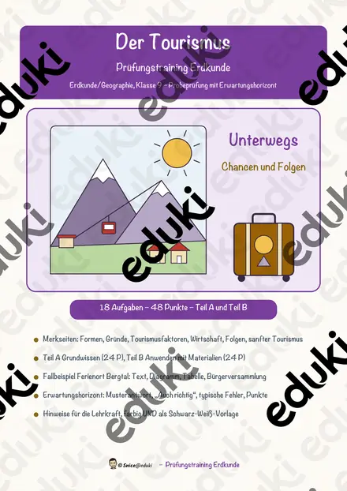
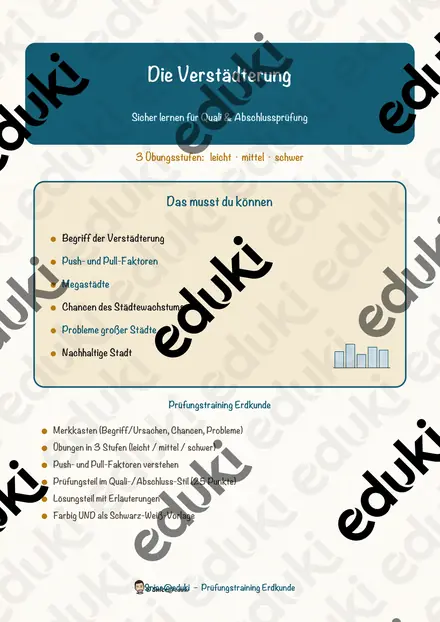
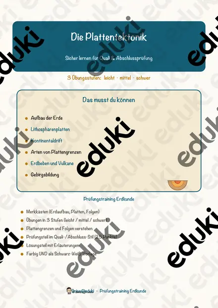
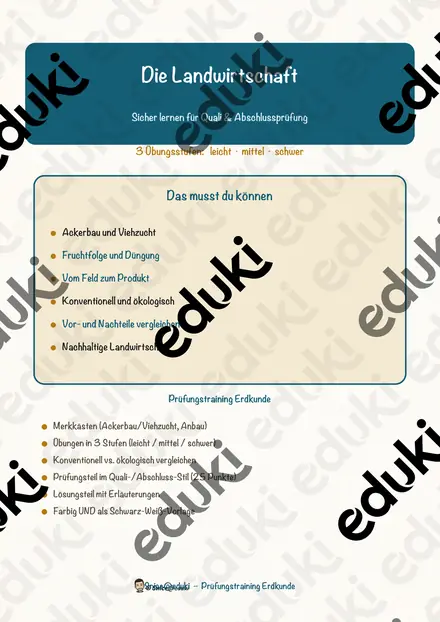
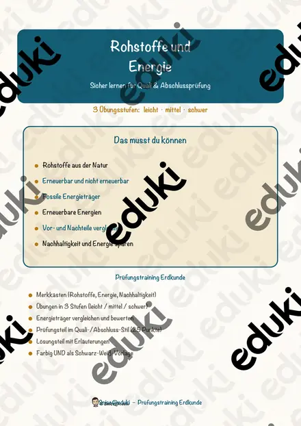
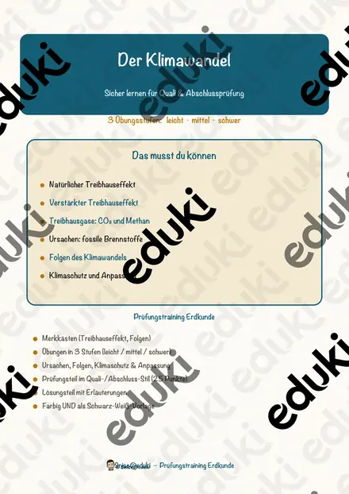
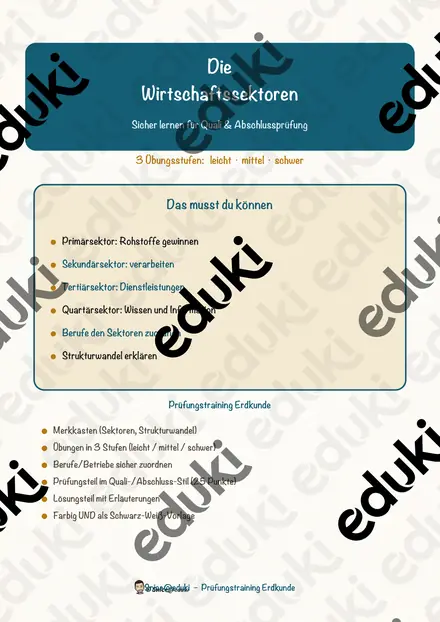
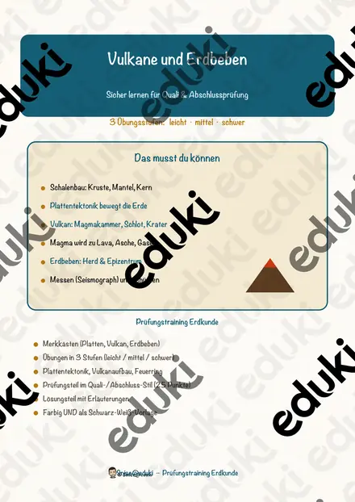
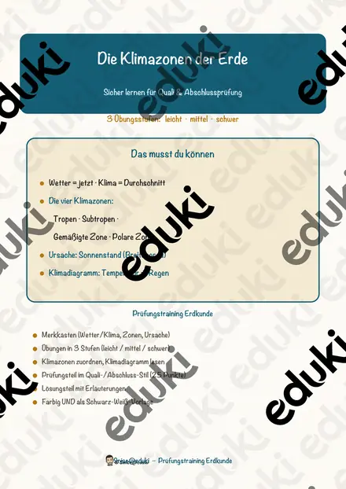

Das Gradnetz der Erde – Prüfungstraining Erdkunde (Klasse 8)
Die Bevölkerungsentwicklung – Prüfungstraining Erdkunde (Klasse 9)

Der Tourismus – Prüfungstraining Erdkunde (Klasse 9)

Die Verstädterung – Prüfungstraining Erdkunde (Klasse 9)

Die Plattentektonik – Prüfungstraining Erdkunde (Klasse 8)

Die Landwirtschaft – Prüfungstraining Erdkunde (Klasse 8)

Rohstoffe und Energie – Prüfungstraining Erdkunde (Klasse 9)

Der Klimawandel – Prüfungstraining Erdkunde (Klasse 9)

Die Wirtschaftssektoren – Prüfungstraining Erdkunde (Klasse 8)

Vulkane und Erdbeben – Prüfungstraining Erdkunde (Klasse 8)

Die Klimazonen der Erde – Prüfungstraining Erdkunde (Klasse 8)
Keine Materialien gefunden – versuch einen anderen Suchbegriff oder Filter.